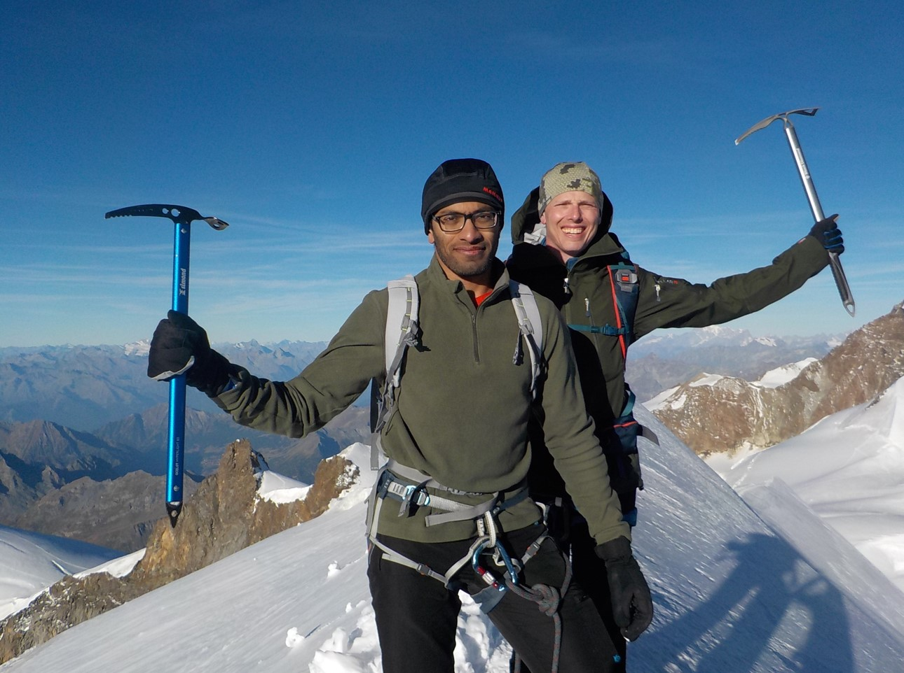

Expedition log
Entries · newest firstMatho Kangri 6000 m peak expedition, alpine style
A private, self-supported push on a remote rocky six-thousander near Leh — chalked out with two of Darjeeling's finest Himalayan mountaineers, and compressed into far fewer days than the mountain usually demands.

From the Western Ghats of India to the European Alps — 4000 m peak-bagging
An alpine summer spent on Gran Paradiso and across the Monte Rosa massif — Parrotspitze, Zumsteinspitze, Signalkuppe, Balmenhorn — on the border where Switzerland leans into Italy.

Mumbai Climate Action Plan: does it promise better cycling infrastructure?
The city's first-ever climate action plan aims for net-zero by 2050. Read as a proud cycle-owner: will Mumbai pioneer safe, climate-friendly streets, or is the fine print thinner than the headline?

A Nepalese touch to the Norwegian trails
Norway's fjord country is a hiker's paradise — and on the iconic path to Preikestolen, the stone steps underfoot were laid by Sherpa stone-masons from Nepal. Two mountain cultures, one staircase.

Mumbai to Goa cycling: 4 lessons from our 4-day pilgrimage on wheels
620 kilometres down the Konkan coastal highway on a road bike — barge crossings, cashless villages, an empty airport, and a homecoming disguised as an endurance ride.